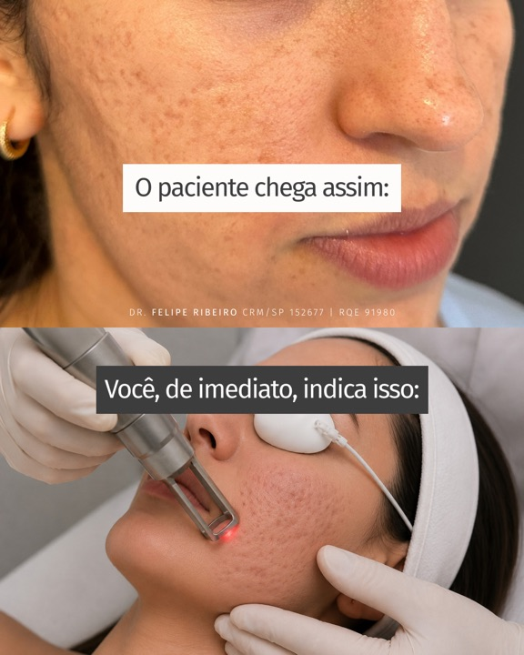
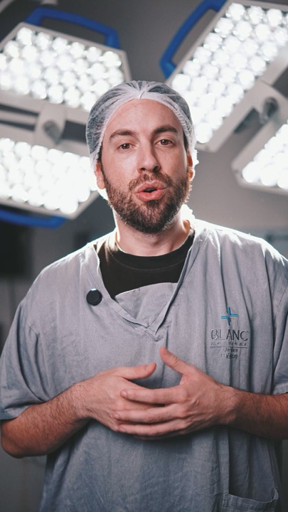
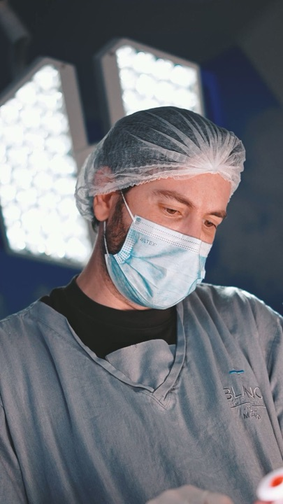
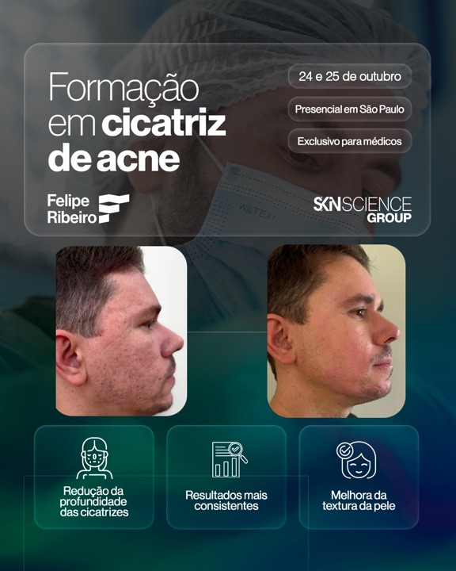
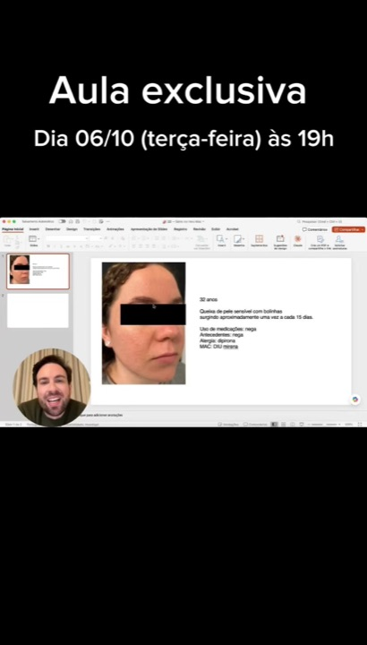
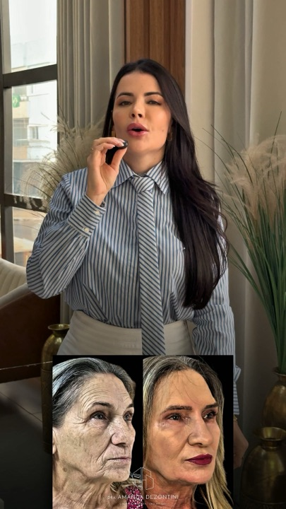
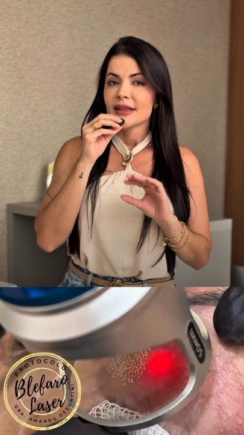
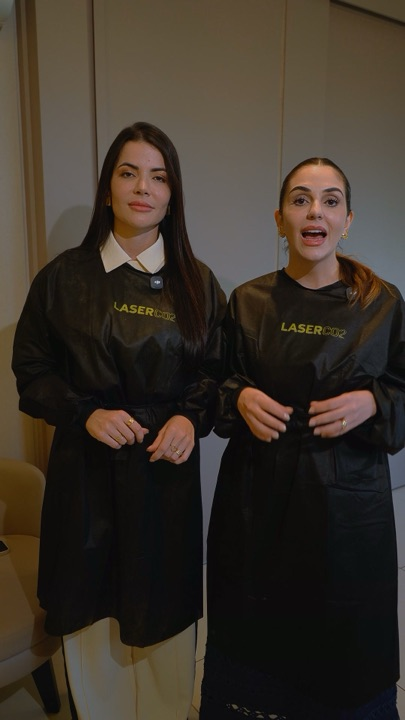
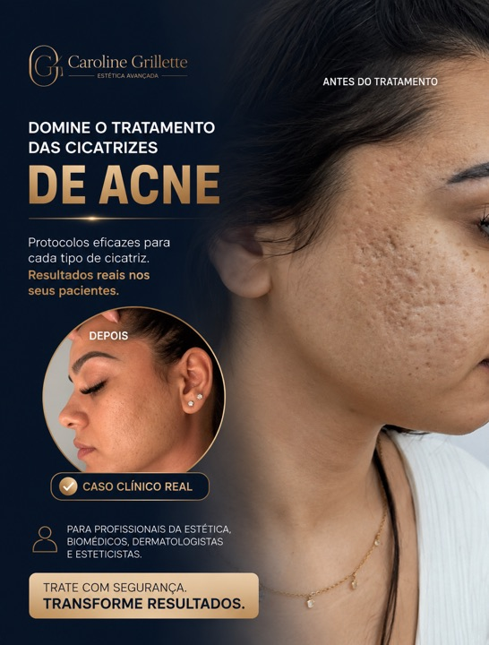

Dra. Caroline Baima · Imersão Prática: Dominando Cicatrizes de Acne
Procuramos na Biblioteca de Anúncios da Meta quem vende curso, imersão ou material para profissional sobre o assunto da Imersão: tratar cicatriz de acne e evitar mancha depois do procedimento. Foram 61 buscas e mais de 1.400 anúncios lidos. Só 4 páginas vendem esse tema hoje. Aqui está o que cada uma diz, o que não copiar e o que só a Carol pode dizer.
Lemos 99 anúncios, entre os 189 que estas páginas mantêm ativos hoje. Três números resumem como esse mercado anuncia:
São a prova mais forte de que o formato funciona.
Nas buscas, só o Dr. Felipe Ribeiro e a Dra. Núcia Pires vendem curso de cicatriz de acne. O dele é presencial em São Paulo, para 10 médicos; o dela é aberto a outros profissionais da saúde. Uma imersão online e exclusiva para médicos não apareceu em nenhuma busca.
Dr. Felipe Ribeiro · Dra. Núcia Pires“Uma única técnica raramente resolve”, “não se trata com técnica isolada”, “técnicas associadas em conjunto”. A Carol diz o mesmo (“não tem bala de prata”), então isso sozinho não diferencia. O que diferencia é o nome e a ordem do método: Avaliar, Associar, Acompanhar, e “comece pelo que mais limita”.
Dr. Felipe Ribeiro · Dra. Núcia Pires · Caroline GrilletteO Dr. Felipe mostra o laser como o reflexo do médico, a Amanda vende o curso para quem “investiu no Laser CO2”. A Carol tem a frase contrária gravada: “você não está limitado a tratar a cicatriz de acne apenas se você tem laser de CO2”. É o médico sem laser que ninguém está chamando.
Dr. Felipe Ribeiro · Amanda DezontiniA Amanda vende “protocolos seguros para fototipos altos”; a Núcia responde “peles morenas podem sim”. É a objeção que a Carol trata no bloco de prevenção de HPI e no Protocolo Pele Segura, com o antes, o durante e o depois.
Amanda Dezontini · Dra. Núcia PiresO Dr. Felipe roda 30 anúncios da formação com a mesma legenda; a Amanda, 14 com 4. O texto fica, e o que se testa é a capa e os primeiros segundos.
Dr. Felipe Ribeiro · Amanda DezontiniEm mais de 300 anúncios sobre cicatriz de acne, nenhum fala de quem tem cicatriz, de tratar sem laser de CO2, de parar de encaminhar o paciente ou dos erros do próprio médico. São quatro ideias centrais da Imersão, e a Carol tem cada uma gravada com as palavras dela.
Espaço livre para a Carol01
Dermatologista · Formação em Cicatrizes de Acne, presencial em São Paulo (24 e 25 de outubro)
Biblioteca de anúncios ↗ Página no Facebook ↗
Cicatrizes de acne estão entre as queixas que mais frustram médico e paciente, porque uma única técnica raramente resolve. Nesta formação presencial de 2 dias, o Dr.…
Botão: Saiba mais ver anúncio ↗
Comente FATC para saber mais sobre a Formação Avançada em Tratamento de Cicatrizes de Acne. Para médicos que buscam domínio teórico-prático no tratamento definitivo para…
Botão: Saiba mais ver anúncio ↗

Cicatrizes de acne estão entre as queixas que mais frustram médico e paciente, porque uma única técnica raramente resolve. Nesta formação presencial de 2 dias, o Dr.…
Botão: Saiba mais ver anúncio ↗

Cicatrizes de acne estão entre as queixas que mais frustram médico e paciente, porque uma única técnica raramente resolve. Nesta formação presencial de 2 dias, o Dr.…
Botão: Saiba mais ver anúncio ↗

Cicatrizes de acne estão entre as queixas que mais frustram médico e paciente, porque uma única técnica raramente resolve. Nesta formação presencial de 2 dias, o Dr.…
Botão: Saiba mais ver anúncio ↗

Cicatrizes de acne estão entre as queixas que mais frustram médico e paciente, porque uma única técnica raramente resolve. Nesta formação presencial de 2 dias, o Dr.…
Botão: Saiba mais ver anúncio ↗
Esta é uma prévia do que os alunos aprendem na Formação em Peeling Médico. Comente "FPM" para saber mais. —— 🇬🇧 This is a preview of what students learn in the Chemical…
Botão: Perfil do Instagram ver anúncio ↗

Palestrante nos maiores congressos de Dermatologia do mundo. Formado no Hospital Saint-Louis, na França. Autor de dois livros de referência em Peeling e Cosmecêuticos. O…
Botão: Saiba mais ver anúncio ↗
02
Dermatoestética · Imersão em Cicatriz de Acne e o “Método Lapidate”
Biblioteca de anúncios ↗ Página no Facebook ↗
Cicatriz de acne não se trata com técnica isolada. Ice pick, boxcar e rolling exigem raciocínio clínico, avaliação precisa e uma conduta bem estruturada para gerar…
Botão: Ver detalhes ver anúncio ↗
Aprenda cicatriz de acne com quem tem mais de 16 anos de experiência clínica. A Dra. Núcia Pires, especialista em cicatrizes ice pick, boxcar e rolling, criou uma…
Botão: Ver detalhes ver anúncio ↗
Aprenda cicatriz de acne com quem tem mais de 16 anos de experiência clínica. A Dra. Núcia Pires, especialista em cicatrizes ice pick, boxcar e rolling, criou uma…
Botão: Ver detalhes ver anúncio ↗
03
Laser de CO2 · curso online e imersão presencial em São Paulo (5 e 6 de outubro)
Biblioteca de anúncios ↗ Página no Facebook ↗

Poucos profissionais sabem aplicar protocolos seguros para fototipos altos, realizar blefaroplastia sem corte e conduzir anestesia com real conforto para o paciente. No…
Botão: Saiba mais ver anúncio ↗
Poucos profissionais sabem aplicar protocolos seguros para fototipos altos, realizar blefaroplastia sem corte e conduzir anestesia com real conforto para o paciente. No…
Botão: Saiba mais ver anúncio ↗
Domine o uso do Laser CO2 na prática clínica com protocolos completos e aplicáveis desde os primeiros atendimentos. Você terá acesso a: • Protocolos de CO2 do básico ao…
Botão: Saiba mais ver anúncio ↗

Poucos profissionais sabem aplicar protocolos seguros para fototipos altos, realizar blefaroplastia sem corte e conduzir anestesia com real conforto para o paciente. No…
Botão: Saiba mais ver anúncio ↗
Domine o uso do Laser CO2 na prática clínica com protocolos completos e aplicáveis desde os primeiros atendimentos. Você terá acesso a: • Protocolos de CO2 do básico ao…
Botão: Saiba mais ver anúncio ↗

Agora é oficial: São Paulo, nós vamos! Nos dias 5 e 6 de outubro, as Dras. Amanda Dezontini e Rafaela Marrafão estarão em São Paulo para uma imersão presencial hands-on…
Botão: Ver detalhes ver anúncio ↗
04
Biomédica · e-book de cicatriz de acne para profissionais e clínica em São Paulo
Biblioteca de anúncios ↗ Página no Facebook ↗

Você profissional sabe como tratar e resolver as cicatrizes de acne do seu paciente? Neste E-book que eu criei especialmente para você resolver de uma vez por todas as…
Botão: Saiba mais ver anúncio ↗
Você profissional sabe como tratar e resolver as cicatrizes de acne do seu paciente? Neste E-book que eu criei especialmente para você resolver de uma vez por todas as…
Botão: Saiba mais ver anúncio ↗
Corte da apresentação da manhã: “eu tenho cicatriz, eu convivo até hoje com a acne da mulher adulta” e “todo mundo treinou laser em mim”. Nenhum anúncio de cicatriz de acne usa a história de quem vive o problema. Legenda com a Imersão e “exclusivo para médicos”.
A abertura da Imersão cabe em 40 segundos: “nós não podemos encaminhar esse paciente”, “eu quero que você pare de fazer isso” e “vocês atendem acne todo santo dia”. Fecha com “você não está limitado a tratar a cicatriz de acne apenas se você tem laser de CO2”, o contrário do que o Dr. Felipe e a Amanda mostram.
Ela conta o ácido que usou cedo demais depois do procedimento: “acabei gerando uma hipercromia pós-inflamatória por conta da dermatite que eu causei”, e fecha com “Esse erro clássico eu quero que você não cometa.” Sem foto de paciente, só ela. Responde ao “protocolo seguro para fototipo alto” da Amanda com experiência própria.